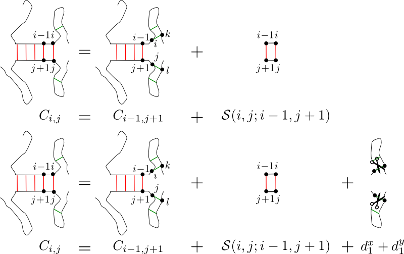

|
||||
| History: Version 1.25 online | ||||
|
||||
| History: Version 1.25 online | ||||
sRNAs are non-coding RNAs found in bacteria. sRNAs are very heterogeneous both in sizes, structures and functions Most of them act as post-transcriptional regulators by interacting with the 5' untranslated region of mRNA transcripts, modifying their stability and/or their ability to be translated.
The RNApredator software facilitates the prediction of sRNA-mRNA interactions in bacteria. Currently targets can be searched in more than 1300 bacterial species. RNApredator uses a dynamic programming approach to compute putative targets. The main machinery used by RNApredator to find targets is the program called RNAplex. RNAplex is a new approach for RNA-RNA interaction search, which has a prediction accuracy similar to that of algorithms that explicitly consider intramolecular structures, but running at least three orders of magnitude faster than RNAup and IntaRNA. This is achieved by using a combination of pre-computed accessibility profiles, with an approximate energy- model, allowing to mimic the effects of the competition between intra- and intermolecular interactions. The addition of the accessibility information into the computation of the sRNA-mRNA interactions allows to improve the specificity as very structured targets are discarded.

Illustration1:
Top: In algorithm like TargetRNA or RNAhybrid, the energy gained
by adding a base-pair (i,j) to an existing duplex (S(i,j;i-1,j+)
does not take the energy necessary to free base-pairs i and j
from all the intramolecular interactions they are involved in.
Bottom:
For each nucleotide added to the duplex, the energy necessary
to remove the nucleotide from all its intramolecular interactions (d1x,
d1y)
is taken into account. This allows to
reach a greater specificity in the target predictions.
Besides the raw prediction of binding partners, RNApredator allows the analysis of the results in different post-processing steps. It is possible to look at enriched GO terms/pathways in a set of user-selected targets. Furthermore RNApredator offers the user the possibility to look at the difference of accessibility around the ribosome binding site before and after binding of the sRNA to its target, which is useful when the user wants to know the sRNA will up or downregulate its target.
| Version | Git-commit | Date | Description |
| 1.00 | 1 | 14.06.2011 | Release Version |
| 1.10 | 17 | 12.03.2012 | Fixed several cases of broken postprocessing, enhanced arrangment of navigation elements unified progress-tracking during calculation and added history |
| 1.25 | 25 | 29.04.2012 | Added checkbox to switch suboptimals on/off Changes to the repository, that make future updates simpler, e.g. automatic configuration depending on hostname Added better accounting of usage statistics and a link to the publication |
| 1.33 | 33 | 17.07.2012 | Bug fixes concerning form field size and postprocessing link to RNAup webserver, migration to HTML5 and validation complete, expanded Help page with parameters of programs used in the pipeline |